YARA
The applications and language that is Yara for everything threat intelligence, forensics, and threat hunting!
YARA in a nutshell
YARA is a tool aimed at (but not limited to) helping malware researchers to identify and classify malware samples. With YARA you can create descriptions of malware families (or whatever you want to describe) based on textual or binary patterns. Each description, a.k.a. rule, consists of a set of strings and a boolean expression which determine its logic. Let's see an example:
rule silent_banker : banker
{
meta:
description = "This is just an example"
threat_level = 3
in_the_wild = true
strings:
$a = {6A 40 68 00 30 00 00 6A 14 8D 91}
$b = {8D 4D B0 2B C1 83 C0 27 99 6A 4E 59 F7 F9}
$c = "UVODFRYSIHLNWPEJXQZAKCBGMT"
condition:
$a or $b or $c
}
The above rule is telling YARA that any file containing one of the three strings must be reported as silent_banker. This is just a simple example, more complex and powerful rules can be created by using wild-cards, case-insensitive strings, regular expressions, special operators and many other features that you'll find explained in YARA's documentation.
Refernce to Rules: https://yara.readthedocs.io/en/stable/writingrules.html
Practicals
Your First Yara Rule
The proprietary language that Yara uses for rules is fairly trivial to pick up, hard to master. This is because your rule is only as effective as your understanding of the patterns you want to search for.
Using a Yara rule is simple. Every yara command requires two arguments to be valid, these are:
1) The rule file we create
2) Name of file, directory, or process ID to use the rule for.
Every rule must have a name and condition.
For example, if we wanted to use "myrule.yar" on directory "some directory" we would use the following command:
yara myrule.yar somedirectory
Note that .yar is the standard file extension for all Yara rules.
We'll make one of the most basic rules you can make below.
1. Make a file named "somefile" via touch somefile
2. Open a new file and name it "myfirstrule.yar" like below:
3. With this open, input the snippet below and save the file:
rule examplerule {
condition: true
}
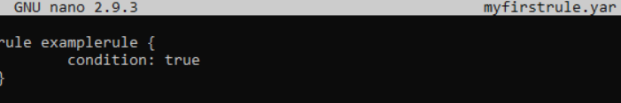
The name of the rule in this snippet is examplerule, where we have one condition - in this case, the condition is condition. As previously discussed, every rule requires both a name and a condition to be valid. This rule has satisfied those two requirements.
Simply, the rule we have made checks to see if the file/directory/PID that we specify exists via condition: true. If the file does exist, we are given the output of examplerule
Let's give this a try on the file "some file" that we made in step one:
yara myfirstrule.yar somefile
If "some file" exists, Yara will say examplerule because the pattern has been met - as we can see below:
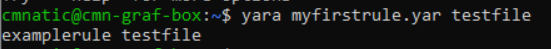
If the file does not exist, Yara will output an error such as that below:
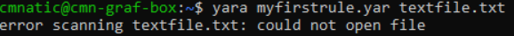
Congrats! You've made your first rule.
Brief Description of Some YARA Rules
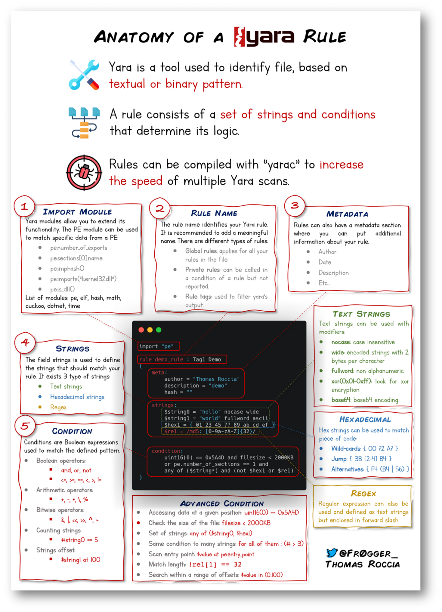
Yara has a few conditions, which I encourage you to read “https://yara.readthedocs.io/en/stable/writingrules.html”at your own leisure. However, I'll detail a few below and explain their purpose.
| Keyword |
|---|
| Desc |
| Meta |
| Strings |
| Conditions |
| Weight |
This section of a Yara rule is reserved for descriptive information by the author of the rule. For example, you can use `desc`, short for description, to summarise what your rule checks for. Anything within this section does not influence the rule itself. Similar to commenting code, it is useful to summarise your rule.
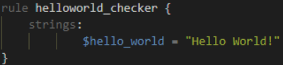
We define the keyword `Strings` where the string that we want to search, i.e., "Hello World!" is stored within the variable $hello_world
Of course, we need a condition here to make the rule valid. In this example, to make this string the condition, we need to use the variable's name. In this case, $hello_world:
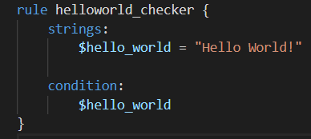
Essentially, if any file has the string "Hello World!" then the rule will match. However, this is literally saying that it will only match if "Hello World!" is found and will not match if "hello world" or "HELLO WORLD."
To solve this, the condition any of them allows multiple strings to be searched for, like below:
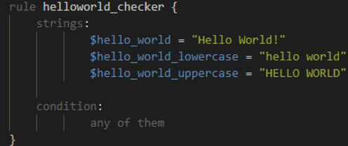
Now, any file with the strings of:
- Hello World!
- hello world
- HELLO WORLD
Will now trigger the rule.
We have already used the true and any of them condition. Much like regular programming, you can use operators such as:
<= less than or equal to
>= more than or equal to
!= not equal to
For example, the rule below would do the following:
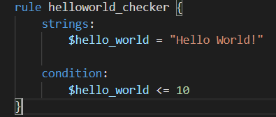
The rule will now:
- Look for the "Hello World!" string
- Only say the rule matches if there are less than or equal to ten occurrences of the "Hello World!" string
Moreover, you can use keywords such as:
and
not
or
To combine multiple conditions. Say if you wanted the rule to match if any .txt files with "Hello World!" is found, you can use a rule like below:
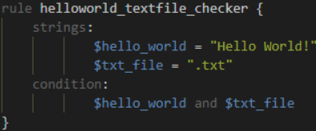
The rule will only match if both conditions are true. To illustrate: below, the rule we created, in this case, did not match because although the file has "Hello World!" it does not have the .txt extension:
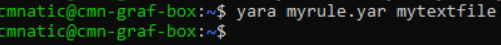
However, the rule matched this time because the file has both "Hello World!" and the `.txt` extension.
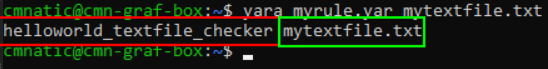
Note: The above way to check Extension doesn't work as shown above. It can be done using modules.
Remembering that the text within the red box is the name of our rule, and the text within the green is the matched file.
YARA Modules
Frameworks such as the Cuckoo Sandbox or Python's PE Module allows you to improve the technicality of your Yara rules ten-fold.
Cuckoo Sandbox is an automated malware analysis environment. This module allows you to generate Yara rules based upon the behaviours discovered from Cuckoo Sandbox. As this environment executes malware, you can create rules on specific behaviours such as runtime strings and the likes.
Python's PE module allows you to create Yara rules from the various sections and elements of the Windows Portable Executable (PE) structure.
Explaining this structure is out of scope as it is covered in my malware introductory room. However, this structure is the standard formatting of all executables and DLL files on windows. Including the programming libraries that are used.
Examining a PE file's contents is an essential technique in malware analysis; this is because behaviours such as cryptography or worming can be largely identified without reverse engineering or execution of the sample.
YARA External Tools
8.1 Yara Tools
Knowing how to create custom Yara rules is useful, but luckily you don't have to create many rules from scratch to begin using Yara to search for evil. There are plenty of GitHub resources and open source tools (along with commercial products) that can be utilized to leverage Yara in hunt operations and/or incident response engagements.
1. LOKI (what, not who, is Loki?)
LOKI is a free open source IOC (Indicator of Compromise) scanner created/written by Florian Roth.
Based on the GitHub page, detection is based on 4 methods:
1. File Name IOC Check
2. Yara Rule Check (we are here)
3. Hash Check
4. C2 Back Connect Check
There are additional checks that LOKI can be used for. For a full rundown, please reference the GitHub readme.
LOKI can be used on both Windows and Linux systems. Windows users can download the binary file (here), which will run on both 32-bit and 64-bit systems. Linux users can use the same link to download LOKI.
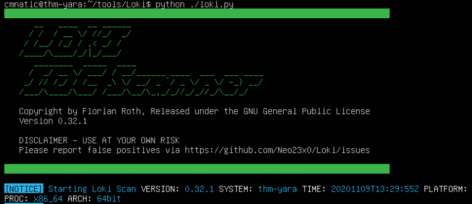
2. THOR (superhero named programs for a superhero blue teamer)
THOR Lite is Florian's newest multi-platform IOC AND YARA scanner. There are precompiled versions for Windows, Linux, and macOS. A nice feature with THOR Lite is its scan throttling to limit exhausting CPU resources. For more information and/or to download the binary, start here. You need to subscribe to their mailing list to obtain a copy of the binary. Note that THOR is geared towards corporate customers. THOR Lite is the free version.
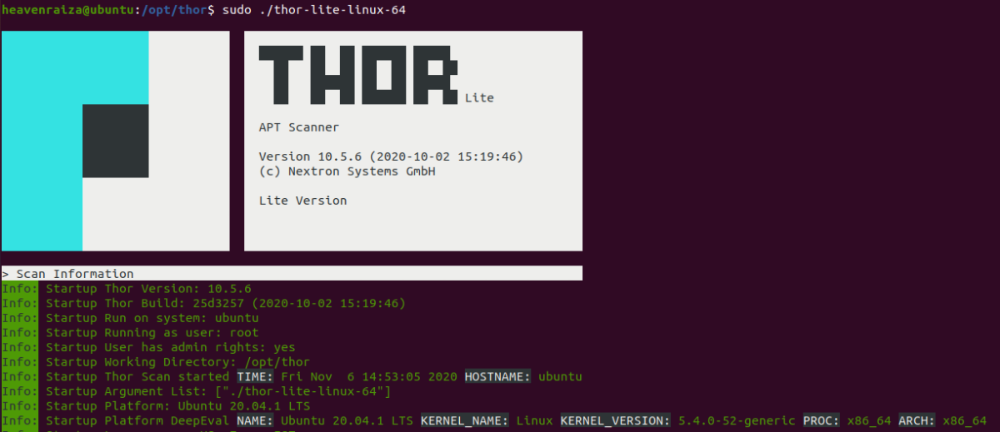
3. FENRIR (naming convention still mythical themed)
This is the 3rd tool created by Neo23x0 (Florian Roth). You guessed it; the previous 2 are named above. The updated version was created to address the issue from its predecessors, where requirements must be met for them to function. Fenrir is a bash script; it will run on any system capable of running bash (nowadays even Windows).
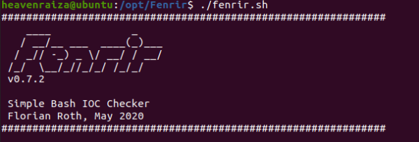
4. YAYA (Yet Another Yara Automaton)
YAYA was created by the EFF (Electronic Frontier Foundation) and released in September 2020. Based on their website, "YAYA is a new open-source tool to help researchers manage multiple YARA rule repositories. YAYA starts by importing a set of high-quality YARA rules and then lets researchers add their own rules, disable specific rulesets, and run scans of files."
Note: Currently, YAYA will only run on Linux systems.
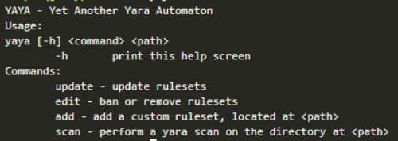
YARA Rules Generator
10.1 Creating Yara rules with yarGen
We need to create a Yara rule to detect this specific web shell in our environment. Typically this is what is done in the case of an incident, which is an event that affects/impacts the organization in a negative fashion.
We can manually open the file and attempt to sift through lines upon lines of code to find possible strings that can be used in our newly created Yara rule.
Let's check how many lines this particular file has. You can run the following: strings <file name> | wc -l.
If you try to go through each string, line by line manually, you should quickly realize that this can be a daunting task.
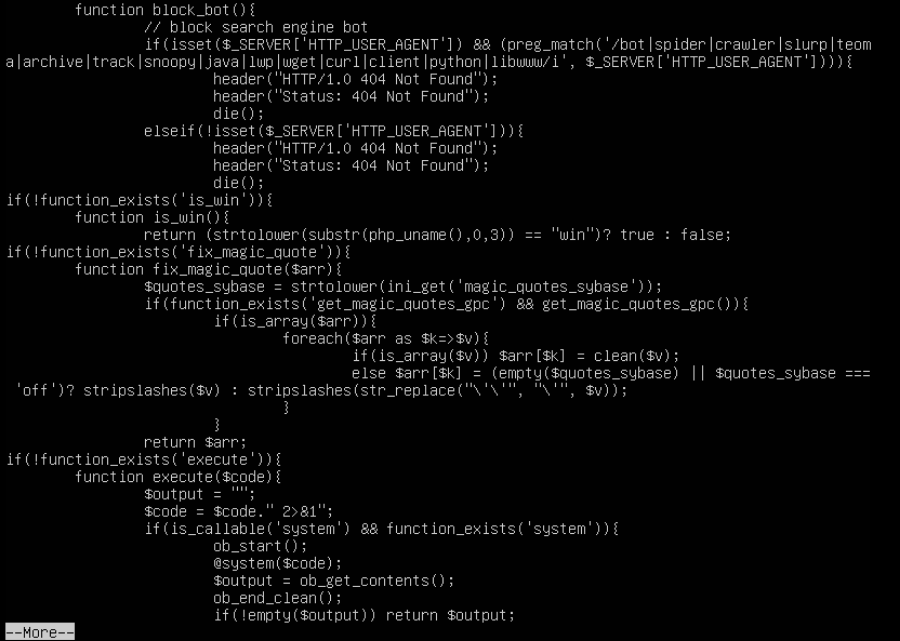
Luckily, we can use yarGen (yes, another tool created by Florian Roth) to aid us with this task.
What is yarGen? yarGen is a generator for YARA rules.
From the README - "The main principle is the creation of yara rules from strings found in malware files while removing all strings that also appear in goodware files. Therefore yarGen includes a big goodware strings and opcode database as ZIP archives that have to be extracted before the first use."
Navigate to the yarGen directory, which is within tools. If you are running yarGen on your own system, you need to update it first by running the following command: python3 yarGen.py --update.
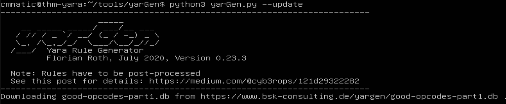
This will update the good-opcodes and good-strings DB's from the online repository. This update will take a few minutes.
Once it has been updated successfully, you'll see the following message at the end of the output.
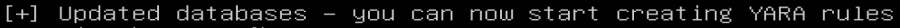
To use yarGen to generate a Yara rule for file 2, you can run the following command:
python3 yarGen.py -m /home/cmnatic/suspicious-files/file2 --excludegood -o /home/cmnatic/suspicious-files/file2.yar
A brief explanation of the parameters above:
-m is the path to the files you want to generate rules for
--excludegood force to exclude all goodware strings (these are strings found in legitimate software and can increase false positives)
-o location & name you want to output the Yara rule
If all is well, you should see the following output.
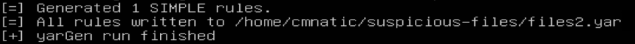
Generally, you would examine the Yara rule and remove any strings that you feel might generate false positives. For this exercise, we will leave the generated Yara rule as is and test to see if Yara will flag file 2 or no.
Note: This freshly generated file2.yar can be used inside Loki. Just paste it inside the “signature base” directory of Loki and from next run onwards, this rule will be used. Thus the second file will be flagged now.
Note: Another tool created to assist with this is called yarAnalyzer (https://github.com/Neo23x0/yarAnalyzer/- created by Florian Roth). We will not examine that tool in this room, but you should read up on it, especially if you decide to start creating your own Yara rules.
Further Reading on creating Yara rules and using yarGen:
https://www.bsk-consulting.de/2015/02/16/write-simple-sound-yara-rules/
https://www.bsk-consulting.de/2015/10/17/how-to-write-simple-but-sound-yara-rules-part-2/
https://www.bsk-consulting.de/2016/04/15/how-to-write-simple-but-sound-yara-rules-part-3/
YARA External Feed Website (Online Search)
Valhalla is an online Yara feed created and hosted by Nextron-Systems (erm, Florian Roth). By now, you should be aware of the ridiculous amount of time and energy Florian has dedicated to creating these tools for the community. Maybe we should have just called this the Florian Roth room. (lol)
Per the website, "VALHALLA boosts your detection capabilities with the power of thousands of hand-crafted high-quality YARA rules."
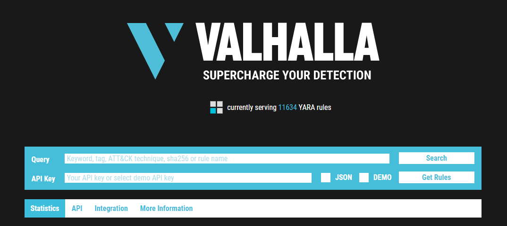
From the image above, we should denote that we can conduct searches based on a keyword, tag, ATT&CK technique, sha256, or rule name.
Note: For more information on ATT&CK, please visit the MITRE room.
Taking a look at the data provided to us, let's examine the first rule listed on the feed (as of this entry date) here.
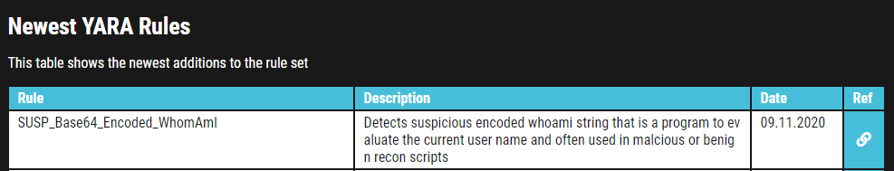
We are provided with the name of the rule, a brief description, a reference link for more information about the rule, along with the rule date.
Feel free to look at some rules to become familiar with the usefulness of Valhalla. The best way to learn the product is by just jumping right in.
Picking up from our scenario, at this point, you know that the 2 files are related. Even though Loki classified the files are suspicious, you know in your gut that they are malicious. Hence the reason you created a Yara rule using yarGen to detect it on other web servers. But let's further pretend that you are not code-savvy (FYI - not all security professionals know how to code/script or read it). You need to conduct further research regarding these files to receive approval to eradicate these files from the network.
{kind=link}